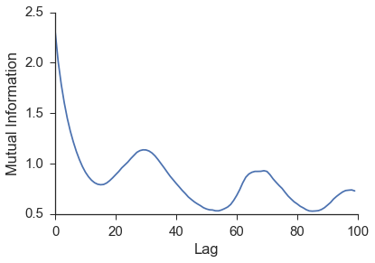
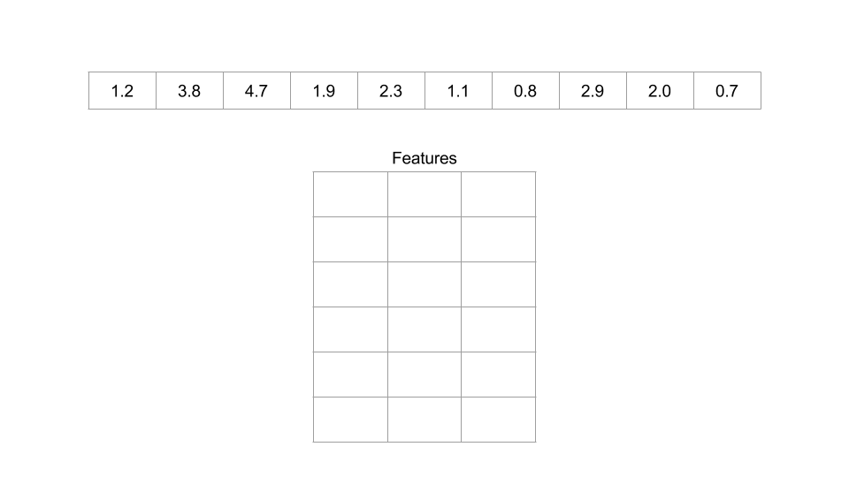

Quick Example¶
In order to illustrate how this package works, we will use the coupled logistic map from the original convergent cross mapping paper. The equations the form:
Notice that \(\beta_{x,y}\) controls the amount of information from the \(Y\) time series that is being injected into the \(X\) time series. Likewise, \(\beta_{y,x}\) controls the amount of information injected into the \(Y\) time series from the \(X\) time series. These parameters control how much one series influences the other. There is a function in skccm.data to reproduce these time series. For example:
import skccm.data as data
rx1 = 3.72 #determines chaotic behavior of the x1 series
rx2 = 3.72 #determines chaotic behavior of the x2 series
b12 = 0.2 #Influence of x1 on x2
b21 = 0.01 #Influence of x2 on x1
ts_length = 1000
x1,x2 = data.coupled_logistic(rx1,rx2,b12,b21,ts_length)
Here we opt to use x1 and x2 instead of X and Y, but the equations are the same. Using these parameters, x1 has more of an influence on x2 than x2 has on x1. This produces the coupled logistic map as seen in the figure below where the top plot is x1 and the bottom is x2.
As is clearly evident from the figure above, there is no way to tell if one series is influencing the other just by examining the time series.
The next step is to embed both time series. An in-depth discussion about appropriately picking the lag and the embedding dimension can be found in the Embed section. For this example, an embedding dimension of 2 and a lag of 1 successfully rebuilds the shadow manifold.
lag = 1
embed = 2
X1 = e1.embed_vectors_1d(lag,embed)
X2 = e2.embed_vectors_1d(lag,embed)

Now that we have embed the time series, all that is left to do is check the forecast skill as a function of library length. This package diverges from the paper above in that a training set is used to rebuild the shadow manifold and the testing set is used to see if nearby points on one manifold can be used to make accurate predictions about the other manifold. This removes the problem of autocorrelated time series. The original implementation can be found in ccm.paper.
from skccm.utilities import train_test_split
#split the embedded time series
x1tr, x1te, x2tr, x2te = train_test_split(X1,X2, percent=.75)
CCM = ccm.ccm() #initiate the class
#library lengths to test
len_tr = len(x1tr)
lib_lens = np.arange(10, len_tr, len_tr/20, dtype='int')
#test causation
sc1, sc2 = CCM.predict_causation(x1tr, x1te, x2tr, x2te,lib_lens)
As can be seen from the image above, x1 has a higher prediction skill. Another way to view this is that information about x1 is present in the x2 time series. This leads to better forecasts for x1 using x2‘s reconstructed manifold. This means that x1 is driving x2 which is exactly how we set the initial conditions when we generated these time series.
To make sure that this algorithm is robust we test a range of \(\beta\) values similar to the original paper. The results below show the difference between sc1 and sc2.
Summary¶
The workflow for convergent cross mapping is as follows:
- Calculate the mutual information of both time series to find the appropriate lag value
- Embed the time series using the calculated lag and best embedding dimension
- Split each embedded time series into a training set and testing set
- Calculate the distance from each test sample to each training sample
- Use the near neighbor time indices from \(X_1\) to make a prediction about \(X_2\)
- Repeat the prediction for multiple library lengths
- Evaluate the predictions
1. Calculate mutual information for both time series to find the appropriate lag value.
Mutual information is used as a way to jump far enough in time that new information about the system can be gained. A similar idea is calculating the autocorrelation. Systems that don’t change much from one time step to the next would have higher autocorrelation and thus a larger lag value would be necessary to gain new information about the system. It turns out that using mutual information over autocorrelation allows for better predictions to be made [CITATION].
Figure: The image above shows the mutual information for the $$x$$ values of the lorenz time series. We can see a minimum around 16.
<br>
2. Determine the embedding dimension by finding which gives the highest prediction skill.
Ideally you want to find the best embedding dimension for a specific time series. A good rule of thumb is to use an embedding dimension of three as your first shot. After the initial analysis, you can tweak this hyperparameter until you achieve the best prediction skill.
Alternatively, you can use a [false near neighbor][fnn] test when the reconstructed attractor is fully “unfolded”. This functionality is not in skccm currently, but will be added in the future.
Figure: An example of an embedding dimension of three and a lag of two.
<br>
3. Split each embedded time series into a training set and testing set.
This protects against highly autocorrelated time series. For example, random walk time series can seem like they are coupled if they are not split into a training set and testing set.

Figure: Splitting an embedded time series into a training set and a testing set.
<br>
5. Calculate the distance from each test sample to each training sample
At this point, you will have these four embedded time series:
- X1tr
- X1te
- X2tr
- X2te
The distance is calculated from every sample in X1te to every sample in X1tr. The same is then done for X2tr and X2te. The distances are then sorted and the closest $$k$$ indices are kept to make a prediction in the next step. $$k$$ is the embedding dimension plus 1. So if your embedding dimension was three, then the amount of near neighbors used to make a prediction will be four.
6. Use the near neighbor time indices from $$X_1$$ to make a prediction about $$X_2$$
The next step is to use the near neighbor indices and weights to make a prediction about the other time series. The indices that were found by calculating the distance from every sample in X1te to every sample in X1tr, are used on X2tr to make a prediction about X2te. This seems a little counterintuitive, but it is expected that if one time series influences the other, the system being forced should be in a similar state when the system doing the forcing is in a certain configuration.
INSERT THOUGHT EXPERIMENT

Figure: An example of switching the indices. Notice the distances and indices have the same number of samples as the testing set, but an extra dimension. This is because you need $$K+1$$ near neighbors in order to surround a point.
*** <br>
7. Repeat the prediction for multiple library lengths
The hope is we see convergence as the library length is increased. By increasing the library length, the density of the rebuilt attractor is increasing. As that attractor becomes more and more populated, better predictions should be able to be made.
8. Finally, evaluate the predictions
The way the predictions are evaluated in the paper is by using the [$$R^2$$][r2] (coefficient of determination) value between the predictions and the actual value. This is done for all the predictions at multiple library lengths. If the predictions for $$X_1$$ are better than $$X_2$$ than it is said that $$X_1$$ influences $$X_2$$.
# Caveats
- Simple attractors can fool this technique (sine waves)
- Can’t be used on non-steady state time series.
- Lorenz equation doesn’t work?
[paper]: http://science.sciencemag.org/content/338/6106/496 [skccm]:https://github.com/NickC1/skccm [r2]: https://www.wikiwand.com/en/Coefficient_of_determination [fnn]: http://www.mpipks-dresden.mpg.de/~tisean/TISEAN_2.1/docs/chaospaper/node9.html